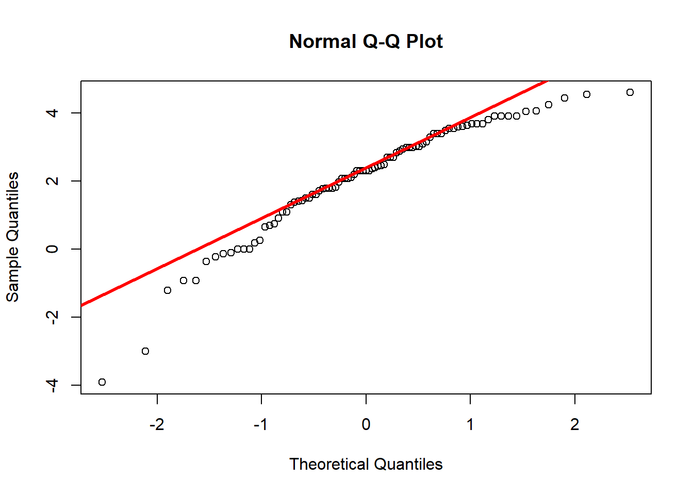
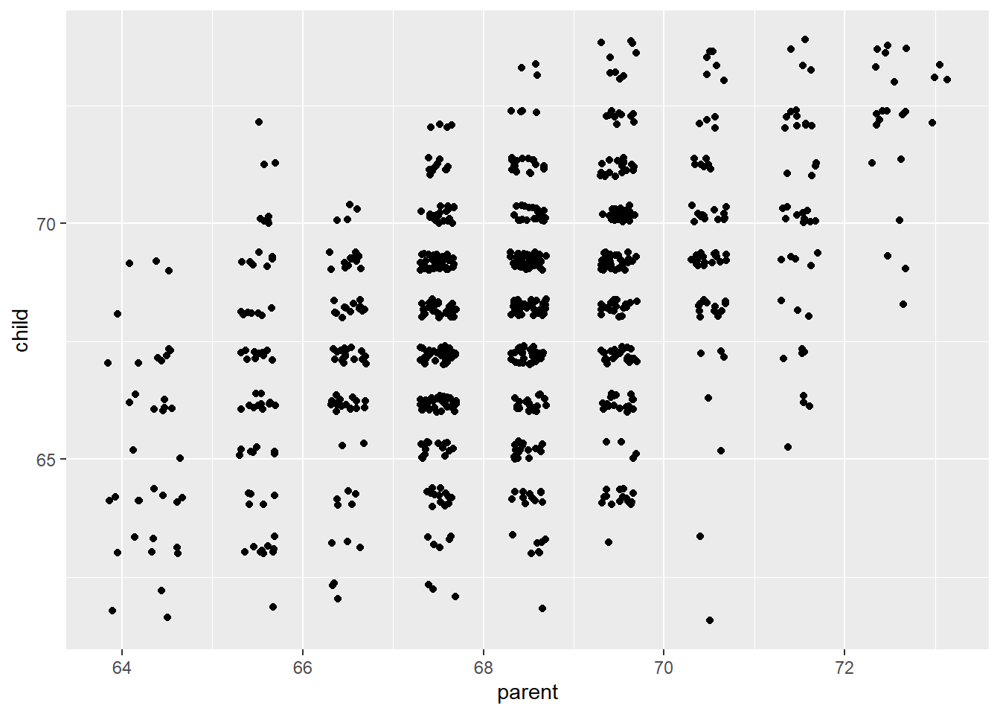
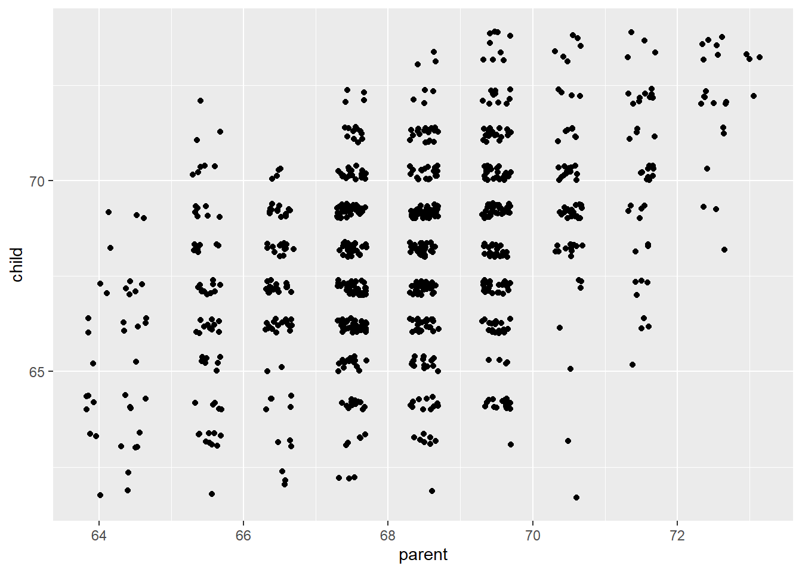
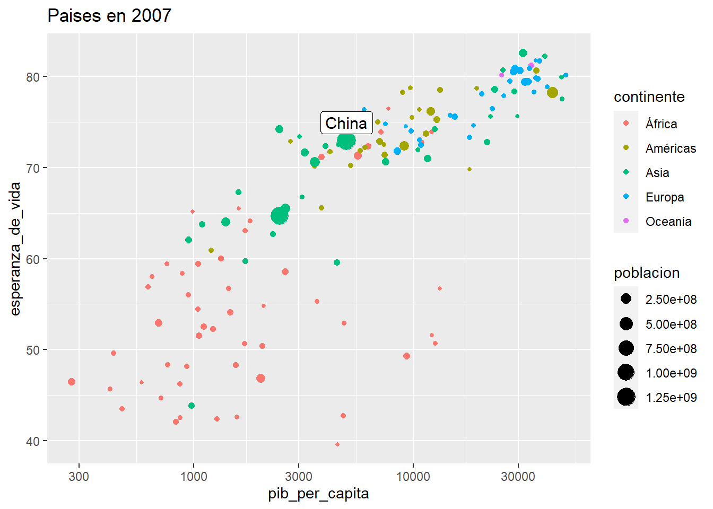
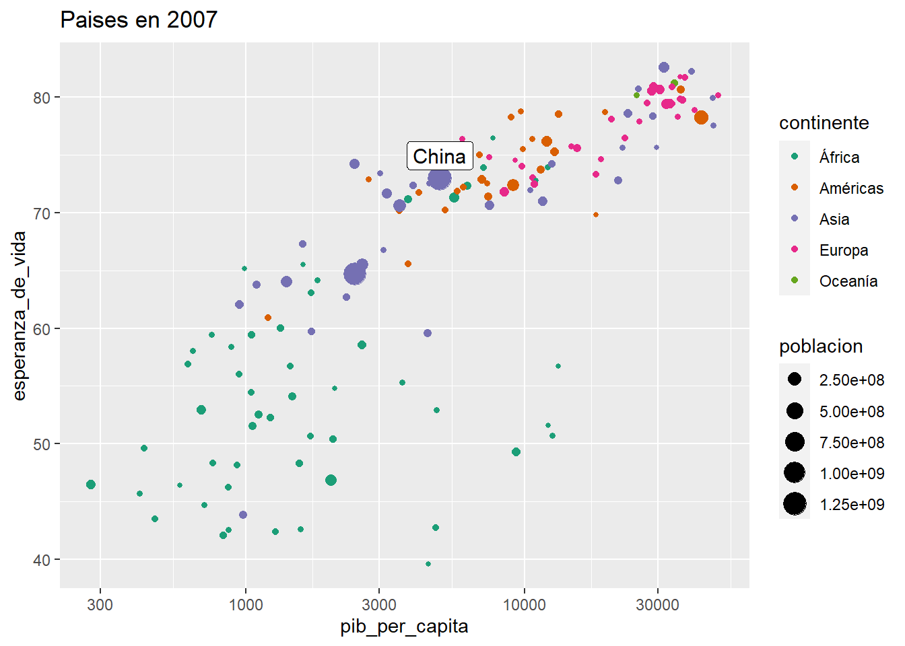

Capítol 6 Teoria Setmana 6 (2021-02-17)
6.1 Packages
install.packages("VIM")6.2 Barómetre (2021-01-29)
Anàlisis de la enquesta preelectoral. Perfil de votant al PSC segons la variable de intenció de vot.
library(foreign)
suppressPackageStartupMessages(library(tidyverse))
library(cowplot)
library(visreg)
library(scales)
data <- read.spss("http://upceo.ceo.gencat.cat/wsceop/7908/Microdades%20anonimitzades%20-992.sav", to.data.frame = TRUE, use.value.labels = TRUE)
data <- data %>%
select(P15R,PROVINCIA,HABITAT,SEXE,EDAT,P38)
dim(data)## [1] 1100 6Les variables seleccionades:
- P15R: En les eleccions al Parlament de Catalunya, convocades pel proper 14 de febrer - a quin partit o coalició votarà? (Agrupació partits)
- PROVINCIA
- HABITAT
- SEXE
- EDAT
- P38: Sumant els ingressos nets mensuals de totes les persones de la seva llar, - aproximadament, quins són els ingressos familiars que entren cada mes a casa seva
Veiem les freqüències de intenció de vot a cada partit.
table(data$P15R)##
## PPC ERC PSC
## 14 165 116
## C's CUP PDeCAT
## 18 42 11
## Junts per Catalunya Catalunya en Comú Podem Vox
## 93 49 10
## Altres, blanc Nul No votaria
## 28 4 71
## NS/NC
## 479data$Vot <- as.numeric(data$P15R == "PSC")
summary(data$Vot)## Min. 1st Qu. Median Mean 3rd Qu. Max.
## 0.0000 0.0000 0.0000 0.1055 0.0000 1.0000S’observa un 10,6% en la intenció del vot del PSC.
6.2.1 Anàlisis univariant y bivariant
Carreguem funcions per establir els intervals de confiança basats en l’error estàndard.
errStd_bin <- function(x) { sqrt(mean(x)*(1-mean(x)) / length(x))}
minInt_bin <- function(x) { mean(x) - 1.96 *errStd_bin(x) }
maxInt_bin <- function(x) { mean(x) + 1.96 *errStd_bin(x) }6.2.1.1 PROVINCIA
RESUM <- data %>%
group_by(PROVINCIA ) %>%
summarise(freq_absolutes = n()
,I_minim = minInt_bin(Vot )
,propensio = mean(Vot )
,I_maxim = maxInt_bin(Vot )) %>%
mutate(freq_relatives = freq_absolutes / sum(freq_absolutes))
p1 <- RESUM %>%
ggplot(aes(PROVINCIA , freq_relatives)) +
geom_bar(stat="identity")+
geom_text(aes(label = freq_absolutes), vjust=1.6, color="white")+
scale_y_continuous(labels = percent)+
theme_minimal()+
theme(axis.text.x = element_text(angle = 90, vjust = 0.5, hjust=1))+
labs(title="Freqüencies")
p2 <- RESUM %>%
ggplot(aes(PROVINCIA , propensio)) +
geom_point(size = 1.5) +
geom_errorbar(aes(ymin =I_minim, ymax = I_maxim, width = .2))+
scale_y_continuous(labels = percent)+
theme_minimal()+
theme(axis.text.x = element_text(angle = 90, vjust = 0.5, hjust=1))+
labs(title="Intervals confiança Indecisió")
plot_grid(p1, p2, ncol=2)
6.2.1.2 HABITAT
RESUM <- data %>%
group_by(HABITAT ) %>%
summarise(freq_absolutes = n()
,I_minim = minInt_bin(Vot )
,propensio = mean(Vot )
,I_maxim = maxInt_bin(Vot )) %>%
mutate(freq_relatives = freq_absolutes / sum(freq_absolutes))
p1 <- RESUM %>%
ggplot(aes(HABITAT , freq_relatives)) +
geom_bar(stat="identity")+
geom_text(aes(label = freq_absolutes), vjust=1.6, color="white")+
scale_y_continuous(labels = percent)+
theme_minimal()+
theme(axis.text.x = element_text(angle = 90, vjust = 0.5, hjust=1))+
labs(title="Freqüencies")
p2 <- RESUM %>%
ggplot(aes(HABITAT , propensio)) +
geom_point(size = 1.5) +
geom_errorbar(aes(ymin =I_minim, ymax = I_maxim, width = .2))+
scale_y_continuous(labels = percent)+
theme_minimal()+
theme(axis.text.x = element_text(angle = 90, vjust = 0.5, hjust=1))+
labs(title="Intervals confiança Indecisió")
plot_grid(p1, p2, ncol=2)
data <- data %>%
mutate(HABITAT_R = as.factor(ifelse(as.numeric(HABITAT)<=2,"3-Petita",
ifelse(as.numeric(HABITAT)<=4,"2-Mitjana", "1-Gran"))))RESUM <- data %>%
group_by(HABITAT_R ) %>%
summarise(freq_absolutes = n()
,I_minim = minInt_bin(Vot )
,propensio = mean(Vot )
,I_maxim = maxInt_bin(Vot )) %>%
mutate(freq_relatives = freq_absolutes / sum(freq_absolutes))
p1 <- RESUM %>%
ggplot(aes(HABITAT_R , freq_relatives)) +
geom_bar(stat="identity")+
geom_text(aes(label = freq_absolutes), vjust=1.6, color="white")+
scale_y_continuous(labels = percent)+
theme_minimal()+
theme(axis.text.x = element_text(angle = 90, vjust = 0.5, hjust=1))+
labs(title="Freqüencies")
p2 <- RESUM %>%
ggplot(aes(HABITAT_R , propensio)) +
geom_point(size = 1.5) +
geom_errorbar(aes(ymin =I_minim, ymax = I_maxim, width = .2))+
scale_y_continuous(labels = percent)+
theme_minimal()+
theme(axis.text.x = element_text(angle = 90, vjust = 0.5, hjust=1))+
labs(title="Intervals confiança Indecisió")
plot_grid(p1, p2, ncol=2)
6.2.1.3 SEXE
RESUM <- data %>%
group_by(SEXE ) %>%
summarise(freq_absolutes = n()
,I_minim = minInt_bin(Vot )
,propensio = mean(Vot )
,I_maxim = maxInt_bin(Vot )) %>%
mutate(freq_relatives = freq_absolutes / sum(freq_absolutes))
p1 <- RESUM %>%
ggplot(aes(SEXE , freq_relatives)) +
geom_bar(stat="identity")+
geom_text(aes(label = freq_absolutes), vjust=1.6, color="white")+
scale_y_continuous(labels = percent)+
theme_minimal()+
theme(axis.text.x = element_text(angle = 90, vjust = 0.5, hjust=1))+
labs(title="Freqüencies")
p2 <- RESUM %>%
ggplot(aes(SEXE , propensio)) +
geom_point(size = 1.5) +
geom_errorbar(aes(ymin =I_minim, ymax = I_maxim, width = .2))+
scale_y_continuous(labels = percent)+
theme_minimal()+
theme(axis.text.x = element_text(angle = 90, vjust = 0.5, hjust=1))+
labs(title="Intervals confiança Indecisió")
plot_grid(p1, p2, ncol=2)
6.2.1.4 EDAT
summary(data$EDAT)## Min. 1st Qu. Median Mean 3rd Qu. Max.
## 18.00 38.00 51.00 51.08 65.00 98.00data <- data %>%
mutate(EDAT_R = cut(EDAT,c(18,seq(25,85,10),100),include.lowest=TRUE))RESUM <- data %>%
group_by(EDAT_R ) %>%
summarise(freq_absolutes = n()
,I_minim = minInt_bin(Vot )
,propensio = mean(Vot )
,I_maxim = maxInt_bin(Vot )) %>%
mutate(freq_relatives = freq_absolutes / sum(freq_absolutes))
p1 <- RESUM %>%
ggplot(aes(EDAT_R , freq_relatives)) +
geom_bar(stat="identity")+
geom_text(aes(label = freq_absolutes), vjust=1.6, color="white")+
scale_y_continuous(labels = percent)+
theme_minimal()+
theme(axis.text.x = element_text(angle = 90, vjust = 0.5, hjust=1))+
labs(title="Freqüencies")
p2 <- RESUM %>%
ggplot(aes(EDAT_R , propensio)) +
geom_point(size = 1.5) +
geom_errorbar(aes(ymin =I_minim, ymax = I_maxim, width = .2))+
scale_y_continuous(labels = percent)+
theme_minimal()+
theme(axis.text.x = element_text(angle = 90, vjust = 0.5, hjust=1))+
labs(title="Intervals confiança Indecisió")
plot_grid(p1, p2, ncol=2)
6.2.1.5 P38
RESUM <- data %>%
group_by(P38 ) %>%
summarise(freq_absolutes = n()
,I_minim = minInt_bin(Vot )
,propensio = mean(Vot )
,I_maxim = maxInt_bin(Vot )) %>%
mutate(freq_relatives = freq_absolutes / sum(freq_absolutes))
p1 <- RESUM %>%
ggplot(aes(P38 , freq_relatives)) +
geom_bar(stat="identity")+
geom_text(aes(label = freq_absolutes), vjust=1.6, color="white")+
scale_y_continuous(labels = percent)+
theme_minimal()+
theme(axis.text.x = element_text(angle = 90, vjust = 0.5, hjust=1))+
labs(title="Freqüencies")
p2 <- RESUM %>%
ggplot(aes(P38 , propensio)) +
geom_point(size = 1.5) +
geom_errorbar(aes(ymin =I_minim, ymax = I_maxim, width = .2))+
scale_y_continuous(labels = percent)+
theme_minimal()+
theme(axis.text.x = element_text(angle = 90, vjust = 0.5, hjust=1))+
labs(title="Intervals confiança Indecisió")
plot_grid(p1, p2, ncol=2)
data$INGRES <- 500
data$INGRES[as.numeric(data$P38)==2] <- 1500
data$INGRES[as.numeric(data$P38)==3] <- 2500
data$INGRES[as.numeric(data$P38)==4] <- 3500
data$INGRES[as.numeric(data$P38)==5] <- 4500
data$INGRES[as.numeric(data$P38)==6] <- 5500
data$INGRES[data$P38=="No ho sap"] <- 2500
data$INGRES[data$P38=="No contesta"] <- 2500
data$INGRES_NSNC <- "1-Contesta"
data$INGRES_NSNC[data$P38=="No ho sap"] <- "2-No ho sap"
data$INGRES_NSNC[data$P38=="No contesta"] <- "3-No contesta"6.2.2
lreg1 <- glm(Vot ~ PROVINCIA + HABITAT_R + SEXE + EDAT + log(INGRES) + INGRES_NSNC, family=binomial, data= data)
summary(lreg1)##
## Call:
## glm(formula = Vot ~ PROVINCIA + HABITAT_R + SEXE + EDAT + log(INGRES) +
## INGRES_NSNC, family = binomial, data = data)
##
## Deviance Residuals:
## Min 1Q Median 3Q Max
## -0.8683 -0.5224 -0.4229 -0.3362 2.5494
##
## Coefficients:
## Estimate Std. Error z value Pr(>|z|)
## (Intercept) -1.386826 1.376850 -1.007 0.31382
## PROVINCIAGIRONA -0.848774 0.539140 -1.574 0.11542
## PROVINCIALLEIDA -0.284928 0.506240 -0.563 0.57355
## PROVINCIATARRAGONA -0.048425 0.355967 -0.136 0.89179
## HABITAT_R2-Mitjana 0.462629 0.230201 2.010 0.04447 *
## HABITAT_R3-Petita -0.402917 0.374768 -1.075 0.28233
## SEXEDona -0.055966 0.203841 -0.275 0.78366
## EDAT 0.019331 0.006106 3.166 0.00155 **
## log(INGRES) -0.238617 0.164638 -1.449 0.14724
## INGRES_NSNC2-No ho sap -0.160915 0.546105 -0.295 0.76825
## INGRES_NSNC3-No contesta -0.515066 0.354438 -1.453 0.14617
## ---
## Signif. codes: 0 '***' 0.001 '**' 0.01 '*' 0.05 '.' 0.1 ' ' 1
##
## (Dispersion parameter for binomial family taken to be 1)
##
## Null deviance: 741.19 on 1099 degrees of freedom
## Residual deviance: 710.51 on 1089 degrees of freedom
## AIC: 732.51
##
## Number of Fisher Scoring iterations: 5100*(exp(coef(lreg1)) -1 )## (Intercept) PROVINCIAGIRONA PROVINCIALLEIDA
## -75.013286 -57.206062 -24.793186
## PROVINCIATARRAGONA HABITAT_R2-Mitjana HABITAT_R3-Petita
## -4.727075 58.824328 -33.163210
## SEXEDona EDAT log(INGRES)
## -5.442899 1.951906 -21.228365
## INGRES_NSNC2-No ho sap INGRES_NSNC3-No contesta
## -14.863541 -40.2539076.2.3 Regressió logística amb covariants: gràfic d’efectes condicionats
visreg(lreg1, "EDAT",
by = "HABITAT_R",
cond=list(INGRES =500,SEXE="Home",PROVINCIA="BARCELONA"), # condicionem a ser home
band = TRUE, # viualitzem bandes
gg = TRUE, # usem ggplot2
overlay=TRUE, # un mateix grafic
scale="response") +
labs(y = "Prob(Vot)",
x = "EDAT")Observem com els homes, de Barcelona, amb ingressos nets mensuals de la llar igual a 500, en poblacions mitjanes, tenen una corba de probabilitat de Vots al PSC superior als altres mides d’hàbitat
6.3 PCA - Anàlisis de Components principals
d <- read.csv("www/data/mesa2021.csv", fileEncoding = "utf-8")
dim(d)## [1] 9139 67d<- d %>%
mutate(N_PSC=Vots.PARTIT.DELS.SOCIALISTES.DE.CATALUNYA..PSC.PSOE...PSC.
,N_ERC=Vots.ESQUERRA.REPUBLICANA.DE.CATALUNYA..ERC.
,N_JxCat=Vots.JUNTS.PER.CATALUNYA..JxCat.
,N_VOX=Vots.VOX..VOX.
,N_CUP=Vots.CANDIDATURA.D.UNITAT.POPULAR.UN.NOU.CICLE.PER.GUANYAR..CUP.G.
,N_COMUNS=Vots.EN.COMÚ.PODEM.PODEM.EN.COMÚ..ECP.PEC.
,N_Cs=Vots.CIUTADANS...PARTIDO.DE.LA.CIUDADANÍA..Cs.
,N_PP=Vots.PARTIT.POPULAR.PARTIDO.POPULAR..PP.
,N_TOT = N_PSC + N_ERC + N_JxCat + N_VOX + N_CUP + N_COMUNS + N_Cs + N_PP
,municipi=Nom.municipi,comarca=Nom.comarca)
dmesa<-d %>%
filter(N_TOT>0) %>%
mutate(PSC = N_PSC / N_TOT
,ERC = N_ERC / N_TOT
,JxCat = N_JxCat / N_TOT
,VOX = N_VOX / N_TOT
,CUP = N_CUP / N_TOT
,COMUNS = N_COMUNS / N_TOT
,Cs = N_Cs / N_TOT
,PP = N_PP / N_TOT
) %>%
select(Districte,Secció,Mesa,municipi,comarca,PSC,ERC,JxCat,VOX,CUP,COMUNS,Cs,PP)
dmun <- d %>%
filter(N_TOT>0) %>%
group_by(municipi,comarca) %>%
summarise(PSC = sum(N_PSC) / sum(N_TOT)
,ERC = sum(N_ERC) / sum(N_TOT)
,JxCat = sum(N_JxCat) / sum(N_TOT)
,VOX = sum(N_VOX) / sum(N_TOT)
,CUP = sum(N_CUP) / sum(N_TOT)
,COMUNS = sum(N_COMUNS) / sum(N_TOT)
,Cs = sum(N_Cs) / sum(N_TOT)
,PP = sum(N_PP) / sum(N_TOT)
) %>%
ungroup()
dcom <- d %>%
filter(N_TOT>0) %>%
group_by(comarca) %>%
summarise(PSC = sum(N_PSC) / sum(N_TOT)
,ERC = sum(N_ERC) / sum(N_TOT)
,JxCat = sum(N_JxCat) / sum(N_TOT)
,VOX = sum(N_VOX) / sum(N_TOT)
,CUP = sum(N_CUP) / sum(N_TOT)
,COMUNS = sum(N_COMUNS) / sum(N_TOT)
,Cs = sum(N_Cs) / sum(N_TOT)
,PP = sum(N_PP) / sum(N_TOT)
) %>%
ungroup()dim(dmesa)## [1] 9139 13head(dmesa)## Districte Secció Mesa municipi comarca PSC ERC JxCat
## 1 1 1 A Abrera Baix Llobregat 0.3015075 0.2361809 0.10050251
## 2 1 1 B Abrera Baix Llobregat 0.3898305 0.1807910 0.07344633
## 3 1 1 C Abrera Baix Llobregat 0.2949309 0.2534562 0.07373272
## 4 1 2 A Abrera Baix Llobregat 0.3594470 0.2119816 0.12903226
## 5 1 2 B Abrera Baix Llobregat 0.4136364 0.1590909 0.05909091
## 6 1 2 C Abrera Baix Llobregat 0.3756098 0.2097561 0.06341463
## VOX CUP COMUNS Cs PP
## 1 0.07537688 0.06532663 0.10552764 0.07537688 0.04020101
## 2 0.07344633 0.02259887 0.12994350 0.10734463 0.02259887
## 3 0.11520737 0.05529954 0.07834101 0.08294931 0.04608295
## 4 0.10138249 0.03225806 0.06451613 0.04608295 0.05529954
## 5 0.09545455 0.03181818 0.10454545 0.07727273 0.05909091
## 6 0.09756098 0.01951220 0.11219512 0.10243902 0.01951220X_mesa <- dmesa %>%
select(PSC,ERC,JxCat,VOX,CUP,COMUNS,Cs,PP) %>%
scale()
head(X_mesa)## PSC ERC JxCat VOX CUP COMUNS
## [1,] 0.4798992 0.1872116 -0.8357312 -0.1714520 -0.09972564 0.9452201
## [2,] 1.2818016 -0.6216485 -1.0546477 -0.2135402 -1.15370367 1.6421690
## [3,] 0.4201883 0.4394833 -1.0523304 0.6968941 -0.34706685 0.1691800
## [4,] 1.0059435 -0.1661717 -0.6048918 0.3954972 -0.91543754 -0.2254502
## [5,] 1.4979398 -0.9385347 -1.1708000 0.2662619 -0.92628825 0.9171837
## [6,] 1.1526885 -0.1986702 -1.1358159 0.3121843 -1.22984357 1.1355429
## Cs PP
## [1,] 0.5237459 -0.001549926
## [2,] 1.5415819 -0.626328468
## [3,] 0.7648478 0.207226599
## [4,] -0.4089574 0.534364619
## [5,] 0.5841085 0.668937304
## [6,] 1.3853900 -0.735888375round(cov(X_mesa),3)## PSC ERC JxCat VOX CUP COMUNS Cs PP
## PSC 1.000 -0.636 -0.880 0.560 -0.679 0.465 0.642 0.269
## ERC -0.636 1.000 0.444 -0.562 0.418 -0.327 -0.607 -0.494
## JxCat -0.880 0.444 1.000 -0.641 0.601 -0.577 -0.705 -0.343
## VOX 0.560 -0.562 -0.641 1.000 -0.636 0.120 0.623 0.431
## CUP -0.679 0.418 0.601 -0.636 1.000 -0.217 -0.643 -0.414
## COMUNS 0.465 -0.327 -0.577 0.120 -0.217 1.000 0.315 0.027
## Cs 0.642 -0.607 -0.705 0.623 -0.643 0.315 1.000 0.461
## PP 0.269 -0.494 -0.343 0.431 -0.414 0.027 0.461 1.000pca_mesa <- princomp(X_mesa)
summary(pca_mesa)## Importance of components:
## Comp.1 Comp.2 Comp.3 Comp.4 Comp.5
## Standard deviation 2.1382945 1.0874848 0.84995171 0.71172482 0.60738263
## Proportion of Variance 0.5716005 0.1478441 0.09031212 0.06332596 0.04611925
## Cumulative Proportion 0.5716005 0.7194446 0.80975668 0.87308264 0.91920189
## Comp.6 Comp.7 Comp.8
## Standard deviation 0.57990364 0.55679971 1.703416e-08
## Proportion of Variance 0.04204063 0.03875748 3.627428e-17
## Cumulative Proportion 0.96124252 1.00000000 1.000000e+00attributes(pca_mesa)## $names
## [1] "sdev" "loadings" "center" "scale" "n.obs" "scores" "call"
##
## $class
## [1] "princomp"Z <- pca_mesa$scores
head(Z)## Comp.1 Comp.2 Comp.3 Comp.4 Comp.5 Comp.6
## [1,] 0.8665642 1.0070506 -0.06690843 -0.52329933 -0.1046999 -0.2737614
## [2,] 2.3363692 1.7464017 0.15773682 -0.02917238 0.8176058 -0.8564416
## [3,] 1.2282605 0.1575983 0.65913566 -0.50013781 -0.6020300 -0.2846055
## [4,] 1.1250577 -0.2502562 0.49254384 -0.21954622 0.3997918 1.0098184
## [5,] 2.4677055 0.5828516 -0.28712250 -0.17836744 0.4988533 0.4020623
## [6,] 2.1867538 1.3674877 0.81059413 -0.02288879 0.4167371 -0.6999940
## Comp.7 Comp.8
## [1,] 0.2039157 -3.053113e-16
## [2,] -0.2182054 1.665335e-16
## [3,] 0.2797815 3.330669e-16
## [4,] 0.3236403 -8.187895e-16
## [5,] 0.3165207 -9.020562e-16
## [6,] -0.2129415 1.942890e-16round(cov(Z),3)## Comp.1 Comp.2 Comp.3 Comp.4 Comp.5 Comp.6 Comp.7 Comp.8
## Comp.1 4.573 0.000 0.000 0.000 0.000 0.000 0.00 0
## Comp.2 0.000 1.183 0.000 0.000 0.000 0.000 0.00 0
## Comp.3 0.000 0.000 0.722 0.000 0.000 0.000 0.00 0
## Comp.4 0.000 0.000 0.000 0.507 0.000 0.000 0.00 0
## Comp.5 0.000 0.000 0.000 0.000 0.369 0.000 0.00 0
## Comp.6 0.000 0.000 0.000 0.000 0.000 0.336 0.00 0
## Comp.7 0.000 0.000 0.000 0.000 0.000 0.000 0.31 0
## Comp.8 0.000 0.000 0.000 0.000 0.000 0.000 0.00 06.3.1 Components Principals: gràfics d’individus, variables
plot(pca_mesa$scores[,1:2], pch =".", main ="Gràfic de meses")
biplot(pca_mesa, cex=0.7, col=c("grey","red"))
library(FactoMineR)
respca_mesa <- PCA(X_mesa, graph=FALSE)
summary(respca_mesa)##
## Call:
## PCA(X = X_mesa, graph = FALSE)
##
##
## Eigenvalues
## Dim.1 Dim.2 Dim.3 Dim.4 Dim.5 Dim.6 Dim.7
## Variance 4.573 1.183 0.722 0.507 0.369 0.336 0.310
## % of var. 57.160 14.784 9.031 6.333 4.612 4.204 3.876
## Cumulative % of var. 57.160 71.944 80.976 87.308 91.920 96.124 100.000
## Dim.8
## Variance 0.000
## % of var. 0.000
## Cumulative % of var. 100.000
##
## Individuals (the 10 first)
## Dist Dim.1 ctr cos2 Dim.2 ctr cos2 Dim.3 ctr
## 1 | 1.473 | 0.867 0.002 0.346 | 1.007 0.009 0.467 | 0.067 0.000
## 2 | 3.160 | 2.336 0.013 0.547 | 1.746 0.028 0.305 | -0.158 0.000
## 3 | 1.655 | 1.228 0.004 0.551 | 0.158 0.000 0.009 | -0.659 0.007
## 4 | 1.704 | 1.125 0.003 0.436 | -0.250 0.001 0.022 | -0.493 0.004
## 5 | 2.656 | 2.468 0.015 0.863 | 0.583 0.003 0.048 | 0.287 0.001
## 6 | 2.832 | 2.187 0.011 0.596 | 1.368 0.017 0.233 | -0.811 0.010
## 7 | 1.853 | 1.516 0.005 0.669 | 0.494 0.002 0.071 | -0.579 0.005
## 8 | 2.120 | 1.125 0.003 0.282 | 1.519 0.021 0.514 | -0.817 0.010
## 9 | 2.081 | 1.794 0.008 0.744 | -0.930 0.008 0.200 | -0.106 0.000
## 10 | 3.078 | 2.796 0.019 0.825 | -0.603 0.003 0.038 | -0.581 0.005
## cos2
## 1 0.002 |
## 2 0.002 |
## 3 0.159 |
## 4 0.084 |
## 5 0.012 |
## 6 0.082 |
## 7 0.098 |
## 8 0.149 |
## 9 0.003 |
## 10 0.036 |
##
## Variables
## Dim.1 ctr cos2 Dim.2 ctr cos2 Dim.3 ctr cos2
## PSC | 0.877 16.804 0.768 | 0.256 5.524 0.065 | -0.123 2.099 0.015 |
## ERC | -0.744 12.107 0.554 | 0.143 1.718 0.020 | -0.449 27.900 0.202 |
## JxCat | -0.878 16.851 0.771 | -0.302 7.730 0.091 | 0.138 2.627 0.019 |
## VOX | 0.782 13.381 0.612 | -0.291 7.158 0.085 | -0.240 8.000 0.058 |
## CUP | -0.786 13.509 0.618 | 0.145 1.781 0.021 | 0.375 19.478 0.141 |
## COMUNS | 0.477 4.969 0.227 | 0.745 46.976 0.556 | 0.339 15.888 0.115 |
## Cs | 0.848 15.725 0.719 | -0.091 0.702 0.008 | -0.016 0.034 0.000 |
## PP | 0.552 6.655 0.304 | -0.580 28.411 0.336 | 0.416 23.974 0.173 |plot(respca_mesa,choix="ind", cex=.1)
plot(respca_mesa,choix="var")
6.3.1.1 Muncipi
X_mun <- dmun %>%
select(PSC,ERC,JxCat,VOX,CUP,COMUNS,Cs,PP) %>%
scale()
head(X_mun)## PSC ERC JxCat VOX CUP COMUNS
## [1,] -1.0680025 -0.1951766 1.2652455 -1.26203775 0.8570902 -0.3219951
## [2,] 2.5592264 -1.0298304 -2.0999427 1.66838562 -1.2687628 1.7333943
## [3,] -0.3023732 0.2965304 0.3265143 -0.45103561 0.3688814 -0.9039498
## [4,] -0.3624323 0.5467015 0.5774023 -0.05130109 -0.9667080 -0.7251911
## [5,] -1.1867827 -1.2967095 0.9280739 -0.43047329 2.8021293 -1.0867382
## [6,] -0.5559249 0.3756069 -0.2751672 -0.05149017 1.0593011 0.1636361
## Cs PP
## [1,] -0.5406946 -1.15890625
## [2,] 2.4578172 0.65668030
## [3,] -0.1663473 -0.46674009
## [4,] -0.2552742 0.02885896
## [5,] -0.6788765 -0.52016231
## [6,] 0.4630548 -0.88542106respca_mun <- PCA(X_mun, graph=FALSE)
summary(respca_mun)##
## Call:
## PCA(X = X_mun, graph = FALSE)
##
##
## Eigenvalues
## Dim.1 Dim.2 Dim.3 Dim.4 Dim.5 Dim.6 Dim.7
## Variance 4.073 1.110 1.022 0.738 0.498 0.296 0.261
## % of var. 50.914 13.880 12.775 9.231 6.231 3.706 3.262
## Cumulative % of var. 50.914 64.795 77.569 86.800 93.032 96.738 100.000
## Dim.8
## Variance 0.000
## % of var. 0.000
## Cumulative % of var. 100.000
##
## Individuals (the 10 first)
## Dist Dim.1 ctr cos2 Dim.2 ctr cos2 Dim.3 ctr
## 1 | 2.618 | -2.365 0.145 0.816 | 0.864 0.071 0.109 | 0.295 0.009
## 2 | 5.091 | 4.994 0.647 0.962 | 0.234 0.005 0.002 | 0.676 0.047
## 3 | 1.300 | -1.078 0.030 0.688 | -0.185 0.003 0.020 | -0.189 0.004
## 4 | 1.515 | -0.554 0.008 0.134 | -0.808 0.062 0.285 | -0.966 0.096
## 5 | 3.730 | -2.397 0.149 0.413 | 2.182 0.453 0.342 | 0.044 0.000
## 6 | 1.637 | -0.525 0.007 0.103 | 0.160 0.002 0.010 | 1.079 0.120
## 7 | 0.563 | -0.391 0.004 0.483 | -0.236 0.005 0.176 | 0.208 0.004
## 8 | 1.429 | 0.326 0.003 0.052 | 0.278 0.007 0.038 | 1.351 0.189
## 9 | 1.803 | -0.956 0.024 0.282 | 1.130 0.121 0.393 | -0.715 0.053
## 10 | 5.334 | 1.634 0.069 0.094 | -1.846 0.324 0.120 | -2.541 0.667
## cos2
## 1 0.013 |
## 2 0.018 |
## 3 0.021 |
## 4 0.407 |
## 5 0.000 |
## 6 0.435 |
## 7 0.136 |
## 8 0.894 |
## 9 0.157 |
## 10 0.227 |
##
## Variables
## Dim.1 ctr cos2 Dim.2 ctr cos2 Dim.3 ctr cos2
## PSC | 0.899 19.850 0.809 | -0.040 0.143 0.002 | 0.096 0.899 0.009 |
## ERC | -0.379 3.522 0.143 | -0.886 70.691 0.785 | 0.240 5.645 0.058 |
## JxCat | -0.808 16.030 0.653 | 0.323 9.397 0.104 | -0.385 14.487 0.148 |
## VOX | 0.843 17.452 0.711 | 0.021 0.040 0.000 | -0.179 3.148 0.032 |
## CUP | -0.580 8.257 0.336 | 0.385 13.349 0.148 | 0.416 16.953 0.173 |
## COMUNS | 0.586 8.444 0.344 | 0.233 4.868 0.054 | 0.622 37.898 0.387 |
## Cs | 0.881 19.074 0.777 | 0.092 0.754 0.008 | -0.029 0.081 0.001 |
## PP | 0.548 7.370 0.300 | -0.092 0.757 0.008 | -0.462 20.890 0.213 |plot(respca_mun,choix="ind", cex=.1)
plot(respca_mun,choix="var")
6.3.1.2 Comarca
X_com <- dcom %>%
select(PSC,ERC,JxCat,VOX,CUP,COMUNS,Cs,PP) %>%
scale()
rownames(X_com) <- dcom$comarca
head(X_com)## PSC ERC JxCat VOX CUP
## Alt Camp -0.30529296 0.03487542 0.14640166 0.007228997 0.80049453
## Alt Empordà -0.09770661 -0.64734071 0.05648827 1.373011952 -0.40492332
## Alt Penedès 0.14134786 0.04363951 -0.21651018 -0.264979516 0.51303786
## Alt Urgell -0.07388738 0.44769451 0.18154376 -0.702539940 0.06202996
## Alta Ribagorça 0.92177215 -0.17791455 -0.58775659 -0.715421696 0.54807874
## Anoia 0.80305793 -0.44960062 -0.66918617 0.527041929 -0.39030468
## COMUNS Cs PP
## Alt Camp -0.5813202 -0.1443124 -0.250631053
## Alt Empordà -0.2892842 0.3400093 0.003287255
## Alt Penedès 0.7393680 -0.1767673 -0.540350173
## Alt Urgell -0.2619583 -0.4231937 -0.019771562
## Alta Ribagorça 1.2315719 -0.7777302 0.220674650
## Anoia 0.5181311 0.7270414 -0.014375275respca_com <- PCA(X_com, graph=FALSE)
summary(respca_com)##
## Call:
## PCA(X = X_com, graph = FALSE)
##
##
## Eigenvalues
## Dim.1 Dim.2 Dim.3 Dim.4 Dim.5 Dim.6 Dim.7
## Variance 6.119 0.779 0.568 0.278 0.150 0.066 0.040
## % of var. 76.487 9.735 7.105 3.472 1.880 0.826 0.495
## Cumulative % of var. 76.487 86.222 93.327 96.799 98.679 99.505 100.000
## Dim.8
## Variance 0.000
## % of var. 0.000
## Cumulative % of var. 100.000
##
## Individuals (the 10 first)
## Dist Dim.1 ctr cos2 Dim.2 ctr cos2 Dim.3
## Alt Camp | 1.099 | -0.798 0.248 0.528 | -0.195 0.116 0.031 | -0.210
## Alt Empordà | 1.657 | 0.819 0.261 0.244 | -0.363 0.402 0.048 | -1.090
## Alt Penedès | 1.142 | -0.161 0.010 0.020 | -0.398 0.484 0.122 | 1.031
## Alt Urgell | 1.004 | -0.772 0.232 0.590 | 0.363 0.404 0.131 | 0.192
## Alta Ribagorça | 2.077 | 0.356 0.049 0.029 | -0.261 0.209 0.016 | 1.619
## Anoia | 1.607 | 1.484 0.857 0.852 | -0.266 0.216 0.027 | 0.266
## Aran | 6.235 | 5.908 13.581 0.898 | 0.092 0.026 0.000 | -1.711
## Bages | 0.564 | -0.138 0.007 0.060 | -0.311 0.295 0.303 | 0.201
## Baix Camp | 2.416 | 2.153 1.804 0.794 | 0.191 0.111 0.006 | -0.828
## Baix Ebre | 2.012 | -0.069 0.002 0.001 | 1.580 7.637 0.617 | 0.902
## ctr cos2
## Alt Camp 0.185 0.037 |
## Alt Empordà 4.978 0.433 |
## Alt Penedès 4.450 0.815 |
## Alt Urgell 0.155 0.037 |
## Alta Ribagorça 10.984 0.608 |
## Anoia 0.297 0.027 |
## Aran 12.259 0.075 |
## Bages 0.170 0.127 |
## Baix Camp 2.875 0.118 |
## Baix Ebre 3.410 0.201 |
##
## Variables
## Dim.1 ctr cos2 Dim.2 ctr cos2 Dim.3 ctr
## PSC | 0.967 15.298 0.936 | -0.061 0.478 0.004 | 0.154 4.148
## ERC | -0.682 7.609 0.466 | 0.691 61.251 0.477 | 0.212 7.927
## JxCat | -0.908 13.473 0.824 | -0.280 10.095 0.079 | -0.256 11.573
## VOX | 0.924 13.966 0.855 | 0.015 0.027 0.000 | -0.286 14.429
## CUP | -0.844 11.650 0.713 | -0.252 8.148 0.063 | 0.205 7.395
## COMUNS | 0.823 11.070 0.677 | -0.175 3.921 0.031 | 0.516 46.857
## Cs | 0.968 15.329 0.938 | -0.097 1.196 0.009 | -0.056 0.544
## PP | 0.843 11.606 0.710 | 0.340 14.885 0.116 | -0.201 7.128
## cos2
## PSC 0.024 |
## ERC 0.045 |
## JxCat 0.066 |
## VOX 0.082 |
## CUP 0.042 |
## COMUNS 0.266 |
## Cs 0.003 |
## PP 0.041 |plot(respca_com,choix="ind", cex=.7)
plot(respca_com,choix="var")
6.3.2 Barómetre (2021-01-29)
Valoració candiadts.
data <- read.spss("http://upceo.ceo.gencat.cat/wsceop/7908/Microdades%20anonimitzades%20-992.sav", to.data.frame = TRUE, use.value.labels = TRUE)## re-encoding from UTF-8## Warning in read.spss("http://upceo.ceo.gencat.cat/wsceop/7908/
## Microdades%20anonimitzades%20-992.sav", : Undeclared level(s) 18, 68, 73,
## 98, 138, 144, 181, 237, 430, 491, 614, 629, 645, 659, 670, 690, 695, 777,
## 810, 813, 827, 828, 830, 848, 850, 851, 852, 853, 855, 877 added in variable:
## ENQUESTADOR_CODI## Warning in read.spss("http://upceo.ceo.gencat.cat/wsceop/7908/
## Microdades%20anonimitzades%20-992.sav", : Undeclared level(s) 1, 2, 3, 4, 5, 6,
## 7, 8, 9 added in variable: P4## Warning in read.spss("http://upceo.ceo.gencat.cat/wsceop/7908/
## Microdades%20anonimitzades%20-992.sav", : Undeclared level(s) 1, 2, 3, 4, 5, 6,
## 7, 8, 9 added in variable: P7## Warning in read.spss("http://upceo.ceo.gencat.cat/wsceop/7908/
## Microdades%20anonimitzades%20-992.sav", : Undeclared level(s) 1, 2, 3, 4, 5, 6,
## 7, 8, 9 added in variable: P11## Warning in read.spss("http://upceo.ceo.gencat.cat/wsceop/7908/
## Microdades%20anonimitzades%20-992.sav", : Undeclared level(s) 1, 2, 3, 4, 5, 6,
## 7, 8, 9 added in variable: P13_A## Warning in read.spss("http://upceo.ceo.gencat.cat/wsceop/7908/
## Microdades%20anonimitzades%20-992.sav", : Undeclared level(s) 2, 3, 4, 5, 6, 7,
## 8, 9 added in variable: P13_B## Warning in read.spss("http://upceo.ceo.gencat.cat/wsceop/7908/
## Microdades%20anonimitzades%20-992.sav", : Undeclared level(s) 1, 2, 3, 4, 5, 6,
## 7, 8, 9 added in variable: P13_C## Warning in read.spss("http://upceo.ceo.gencat.cat/wsceop/7908/
## Microdades%20anonimitzades%20-992.sav", : Undeclared level(s) 1, 2, 3, 4, 5, 6,
## 7, 8, 9 added in variable: P13_D## Warning in read.spss("http://upceo.ceo.gencat.cat/wsceop/7908/
## Microdades%20anonimitzades%20-992.sav", : Undeclared level(s) 1, 2, 3, 4, 5, 6,
## 7, 8, 9 added in variable: P13_E## Warning in read.spss("http://upceo.ceo.gencat.cat/wsceop/7908/
## Microdades%20anonimitzades%20-992.sav", : Undeclared level(s) 1, 2, 3, 4, 5, 6,
## 7, 8, 9 added in variable: P19B_A_FERNANDEZ## Warning in read.spss("http://upceo.ceo.gencat.cat/wsceop/7908/
## Microdades%20anonimitzades%20-992.sav", : Undeclared level(s) 1, 2, 3, 4, 5, 6,
## 7, 8, 9 added in variable: P19B_L_BORRAS## Warning in read.spss("http://upceo.ceo.gencat.cat/wsceop/7908/
## Microdades%20anonimitzades%20-992.sav", : Undeclared level(s) 1, 2, 3, 4, 5, 6,
## 7, 8, 9 added in variable: P19B_P_ARAGONES## Warning in read.spss("http://upceo.ceo.gencat.cat/wsceop/7908/
## Microdades%20anonimitzades%20-992.sav", : Undeclared level(s) 1, 2, 3, 4, 5, 6,
## 7, 8, 9 added in variable: P19B_S_ILLA## Warning in read.spss("http://upceo.ceo.gencat.cat/wsceop/7908/
## Microdades%20anonimitzades%20-992.sav", : Undeclared level(s) 1, 2, 3, 4, 5, 6,
## 7, 8, 9 added in variable: P19B_J_ALBIACH## Warning in read.spss("http://upceo.ceo.gencat.cat/wsceop/7908/
## Microdades%20anonimitzades%20-992.sav", : Undeclared level(s) 1, 2, 3, 4, 5, 6,
## 7, 8, 9 added in variable: P19B_C_CARRIZOSA## Warning in read.spss("http://upceo.ceo.gencat.cat/wsceop/7908/
## Microdades%20anonimitzades%20-992.sav", : Undeclared level(s) 1, 2, 3, 4, 5, 6,
## 7, 8, 9 added in variable: P19B_D_SABATER## Warning in read.spss("http://upceo.ceo.gencat.cat/wsceop/7908/
## Microdades%20anonimitzades%20-992.sav", : Undeclared level(s) 1, 2, 3, 4, 5, 6,
## 7, 8 added in variable: P19B_I_GARRIGA## Warning in read.spss("http://upceo.ceo.gencat.cat/wsceop/7908/
## Microdades%20anonimitzades%20-992.sav", : Undeclared level(s) 1, 2, 3, 4, 5, 6,
## 7, 8, 9 added in variable: P19B_A_CHACON## Warning in read.spss("http://upceo.ceo.gencat.cat/wsceop/7908/
## Microdades%20anonimitzades%20-992.sav", : Undeclared level(s) 1932, 1939, 1942,
## 1944, 1945, 1946, 1948, 1950, 1951, 1952, 1953, 1954, 1955, 1956, 1957, 1958,
## 1959, 1960, 1961, 1962, 1963, 1964, 1965, 1966, 1967, 1968, 1969, 1970, 1971,
## 1972, 1973, 1974, 1975, 1976, 1977, 1978, 1979, 1980, 1981, 1982, 1983, 1984,
## 1985, 1986, 1987, 1988, 1989, 1990, 1991, 1992, 1994, 1995, 1996, 1997, 1998,
## 1999, 2000, 2001, 2002, 2003, 2004, 2005, 2006, 2007, 2008, 2009, 2010, 2011,
## 2013, 2014, 2015, 2016, 2017, 2018, 2019 added in variable: P20## Warning in read.spss("http://upceo.ceo.gencat.cat/wsceop/7908/
## Microdades%20anonimitzades%20-992.sav", : Duplicated levels in factor P29:
## Altresvalor <- data %>%
mutate(
FERNANDEZ= ifelse(P19B_A_FERNANDEZ%in%c("No ho sap","No contesta"),NA,as.numeric(P19B_A_FERNANDEZ) -1)
,BORRAS = ifelse(P19B_L_BORRAS%in%c("No ho sap","No contesta"),NA,as.numeric(P19B_L_BORRAS) -1)
,ARAGONES = ifelse(P19B_P_ARAGONES%in%c("No ho sap","No contesta"),NA,as.numeric(P19B_P_ARAGONES) -1)
,ILLA = ifelse(P19B_S_ILLA%in%c("No ho sap","No contesta"),NA,as.numeric(P19B_S_ILLA) -1)
,ALBIACH = ifelse(P19B_J_ALBIACH%in%c("No ho sap","No contesta"),NA,as.numeric(P19B_J_ALBIACH) -1)
,CARRIZOSA = ifelse(P19B_C_CARRIZOSA%in%c("No ho sap","No contesta"),NA,as.numeric(P19B_C_CARRIZOSA) -1)
,SABATER = ifelse(P19B_D_SABATER%in%c("No ho sap","No contesta"),NA,as.numeric(P19B_D_SABATER) -1)
,GARRIGA = ifelse(P19B_I_GARRIGA%in%c("No ho sap","No contesta"),NA,as.numeric(P19B_I_GARRIGA) -1)
,CHACON = ifelse(P19B_A_CHACON%in%c("No ho sap","No contesta"),NA,as.numeric(P19B_A_CHACON) -1)) %>%
select(FERNANDEZ,BORRAS,ARAGONES,ILLA,ALBIACH
,CARRIZOSA,SABATER,GARRIGA,CHACON)
head(valor)## FERNANDEZ BORRAS ARAGONES ILLA ALBIACH CARRIZOSA SABATER GARRIGA CHACON
## 1 0 9 7 6 8 0 2 0 6
## 2 NA NA NA 2 NA NA 6 NA NA
## 3 5 5 7 8 NA 5 NA NA 6
## 4 NA 9 8 6 NA 0 8 NA NA
## 5 NA 8 7 8 NA NA NA NA 6
## 6 NA NA NA NA NA NA NA NA NAlibrary(VIM)## Loading required package: colorspace## Loading required package: grid## VIM is ready to use.## Suggestions and bug-reports can be submitted at: https://github.com/statistikat/VIM/issues##
## Attaching package: 'VIM'## The following object is masked from 'package:datasets':
##
## sleepaggr(valor)cor()
valorNA<-na.omit(valor)
dim(valorNA)## [1] 99 9X <- scale(valorNA)
respca <- PCA(X, graph=FALSE)
summary(respca)##
## Call:
## PCA(X = X, graph = FALSE)
##
##
## Eigenvalues
## Dim.1 Dim.2 Dim.3 Dim.4 Dim.5 Dim.6 Dim.7
## Variance 3.141 1.883 0.990 0.813 0.550 0.537 0.395
## % of var. 34.896 20.926 11.005 9.030 6.109 5.967 4.388
## Cumulative % of var. 34.896 55.822 66.828 75.858 81.967 87.934 92.322
## Dim.8 Dim.9
## Variance 0.379 0.312
## % of var. 4.206 3.472
## Cumulative % of var. 96.528 100.000
##
## Individuals (the 10 first)
## Dist Dim.1 ctr cos2 Dim.2 ctr cos2 Dim.3
## 1 | 2.890 | -0.162 0.008 0.003 | 1.109 0.659 0.147 | -0.937
## 21 | 2.884 | 0.818 0.215 0.080 | -0.311 0.052 0.012 | -1.757
## 23 | 2.410 | -0.343 0.038 0.020 | 2.004 2.154 0.691 | 0.689
## 27 | 2.466 | 1.124 0.406 0.208 | 0.072 0.003 0.001 | 0.006
## 28 | 3.314 | 2.829 2.575 0.729 | 0.301 0.049 0.008 | -0.603
## 33 | 1.980 | -0.361 0.042 0.033 | 0.286 0.044 0.021 | 0.216
## 43 | 2.576 | 1.841 1.090 0.510 | 0.103 0.006 0.002 | -0.947
## 82 | 3.848 | 3.223 3.340 0.701 | -1.757 1.655 0.208 | 0.727
## 92 | 1.669 | -0.821 0.217 0.242 | -0.032 0.001 0.000 | -0.233
## 110 | 3.709 | -1.964 1.241 0.280 | 1.351 0.978 0.133 | -0.392
## ctr cos2
## 1 0.895 0.105 |
## 21 3.147 0.371 |
## 23 0.484 0.082 |
## 27 0.000 0.000 |
## 28 0.370 0.033 |
## 33 0.048 0.012 |
## 43 0.915 0.135 |
## 82 0.538 0.036 |
## 92 0.056 0.020 |
## 110 0.157 0.011 |
##
## Variables
## Dim.1 ctr cos2 Dim.2 ctr cos2 Dim.3 ctr cos2
## FERNANDEZ | 0.616 12.092 0.380 | -0.572 17.359 0.327 | 0.232 5.426 0.054
## BORRAS | 0.351 3.923 0.123 | 0.642 21.911 0.413 | 0.375 14.230 0.141
## ARAGONES | 0.662 13.951 0.438 | 0.442 10.378 0.195 | -0.094 0.883 0.009
## ILLA | 0.627 12.534 0.394 | 0.032 0.053 0.001 | -0.658 43.664 0.432
## ALBIACH | 0.759 18.362 0.577 | 0.229 2.796 0.053 | -0.337 11.438 0.113
## CARRIZOSA | 0.630 12.640 0.397 | -0.589 18.425 0.347 | 0.036 0.132 0.001
## SABATER | 0.413 5.430 0.171 | 0.548 15.919 0.300 | 0.207 4.326 0.043
## GARRIGA | 0.572 10.432 0.328 | -0.486 12.526 0.236 | 0.214 4.609 0.046
## CHACON | 0.578 10.635 0.334 | 0.109 0.634 0.012 | 0.389 15.293 0.151
##
## FERNANDEZ |
## BORRAS |
## ARAGONES |
## ILLA |
## ALBIACH |
## CARRIZOSA |
## SABATER |
## GARRIGA |
## CHACON |plot(respca,choix="ind", cex=0.7)
plot(respca,choix="var")
6.4 Analisis Factorial amb dades omeses
fit = factanal(X, factors=2,rotation = 'varimax')
fit##
## Call:
## factanal(x = X, factors = 2, rotation = "varimax")
##
## Uniquenesses:
## FERNANDEZ BORRAS ARAGONES ILLA ALBIACH CARRIZOSA SABATER GARRIGA
## 0.391 0.713 0.435 0.666 0.427 0.295 0.729 0.578
## CHACON
## 0.760
##
## Loadings:
## Factor1 Factor2
## FERNANDEZ 0.779
## BORRAS -0.120 0.522
## ARAGONES 0.122 0.742
## ILLA 0.335 0.472
## ALBIACH 0.317 0.687
## CARRIZOSA 0.838
## SABATER 0.520
## GARRIGA 0.643
## CHACON 0.282 0.401
##
## Factor1 Factor2
## SS loadings 2.045 1.962
## Proportion Var 0.227 0.218
## Cumulative Var 0.227 0.445
##
## Test of the hypothesis that 2 factors are sufficient.
## The chi square statistic is 28.5 on 19 degrees of freedom.
## The p-value is 0.0742attributes(fit)## $names
## [1] "converged" "loadings" "uniquenesses" "correlation" "criteria"
## [6] "factors" "dof" "method" "rotmat" "STATISTIC"
## [11] "PVAL" "n.obs" "call"
##
## $class
## [1] "factanal"A=fit$loadings; ma=max(abs(A))
L<-A[,1:2]
comm <- apply(A[,1:2]**2, 1,sum)
factvar <- apply(A[,1:2]**2, 2,sum)
unique <- 1 - comm
LL<- cbind(L, communalities=comm, uniq= unique)
LLL <- rbind(LL, c(factvar,sum(comm), sum(unique) ) )
round(LLL,digits=3)## Factor1 Factor2 communalities uniq
## FERNANDEZ 0.779 0.048 0.609 0.391
## BORRAS -0.120 0.522 0.287 0.713
## ARAGONES 0.122 0.742 0.565 0.435
## ILLA 0.335 0.472 0.334 0.666
## ALBIACH 0.317 0.687 0.573 0.427
## CARRIZOSA 0.838 0.049 0.705 0.295
## SABATER -0.033 0.520 0.271 0.729
## GARRIGA 0.643 0.093 0.422 0.578
## CHACON 0.282 0.401 0.240 0.760
## 2.045 1.962 4.006 4.9946.4.1 Representació de les variables
plot(A[,1],A[,2], xlim = c(-ma, ma), ylim = c(-ma,ma), type = 'n', xlab="factor 1", ylab="factor 2")
arrows(rep(0,6), rep(0,6), A[,1], A[,2], length = 0.05)
abline(h = 0, lty = 3)
abline(v = 0, lty = 3)
text(A[,1], A[,2] , colnames(X), cex =.7) 6.4.2 Anàlisis factorial amb correlacions dos a dos
head(valor)## FERNANDEZ BORRAS ARAGONES ILLA ALBIACH CARRIZOSA SABATER GARRIGA CHACON
## 1 0 9 7 6 8 0 2 0 6
## 2 NA NA NA 2 NA NA 6 NA NA
## 3 5 5 7 8 NA 5 NA NA 6
## 4 NA 9 8 6 NA 0 8 NA NA
## 5 NA 8 7 8 NA NA NA NA 6
## 6 NA NA NA NA NA NA NA NA NAdim(valor)## [1] 1100 9aggr(valor)
R <- cor(valor, use="pairwise.complete.obs")
round(R,3)## FERNANDEZ BORRAS ARAGONES ILLA ALBIACH CARRIZOSA SABATER GARRIGA
## FERNANDEZ 1.000 0.005 0.074 0.231 0.327 0.726 0.120 0.648
## BORRAS 0.005 1.000 0.517 0.205 0.308 -0.067 0.534 0.012
## ARAGONES 0.074 0.517 1.000 0.439 0.504 0.030 0.408 0.030
## ILLA 0.231 0.205 0.439 1.000 0.497 0.214 0.310 0.209
## ALBIACH 0.327 0.308 0.504 0.497 1.000 0.229 0.422 0.317
## CARRIZOSA 0.726 -0.067 0.030 0.214 0.229 1.000 0.005 0.605
## SABATER 0.120 0.534 0.408 0.310 0.422 0.005 1.000 0.158
## GARRIGA 0.648 0.012 0.030 0.209 0.317 0.605 0.158 1.000
## CHACON 0.350 0.380 0.463 0.402 0.467 0.283 0.443 0.258
## CHACON
## FERNANDEZ 0.350
## BORRAS 0.380
## ARAGONES 0.463
## ILLA 0.402
## ALBIACH 0.467
## CARRIZOSA 0.283
## SABATER 0.443
## GARRIGA 0.258
## CHACON 1.000fit = factanal(covmat =R, factors=2,rotation = 'varimax')
A=fit$loadings; ma=max(abs(A)) Veiem la representació.
L<-A[,1:2]
comm <- apply(A[,1:2]**2, 1,sum)
factvar <- apply(A[,1:2]**2, 2,sum)
unique <- 1 - comm
LL<- cbind(L, communalities=comm, uniq= unique)
LLL <- rbind(LL, c(factvar,sum(comm), sum(unique) ) )
round(LLL,3)## Factor1 Factor2 communalities uniq
## FERNANDEZ 0.129 0.868 0.769 0.231
## BORRAS 0.649 -0.106 0.433 0.567
## ARAGONES 0.750 -0.020 0.563 0.437
## ILLA 0.531 0.218 0.330 0.670
## ALBIACH 0.643 0.286 0.495 0.505
## CARRIZOSA 0.028 0.830 0.689 0.311
## SABATER 0.651 0.031 0.425 0.575
## GARRIGA 0.117 0.727 0.542 0.458
## CHACON 0.628 0.302 0.485 0.515
## 2.529 2.203 4.732 4.268Gráficament.
plot(A[,1],A[,2], xlim = c(-ma, ma), ylim = c(-ma,ma), type = 'n', xlab="factor 1", ylab="factor 2")
arrows(rep(0,6), rep(0,6), A[,1], A[,2], length = 0.04)
abline(h = 0, lty = 3)
abline(v = 0, lty = 3)
text(A[,1], A[,2] , rownames(R), cex =.7)